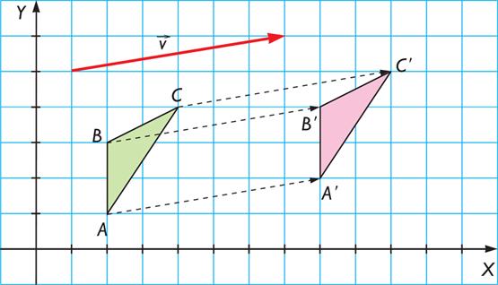

Traslación
Las traslaciones pueden entenderse como movimientos directos sin cambios de orientación, es decir, mantienen la forma y el tamaño de las figuras u objetos trasladados, a las cuales deslizan según el vector.

Las traslación 2D implica el desplazamiento de un polígono donde cada punto P = (x, y), es trasladado tx unidades en el eje x y ty unidades en el eje y, de esta forma, las coordenadas del nuevo punto P’ = (x’, y’) se obtienen como:
\begin{equation} \begin{split} x' = x + t_x \\ y' = y + t_y \end{split} \end{equation}
Sea t = (tx, ty) el vector de distancias y T la matriz de traslación, en coordenadas homogéneas la traslación de un punto P en 2D se puede expresar como el producto matricial P’ = PT, es decir:
\begin{equation} \begin{bmatrix} x' & y' & 1 \end{bmatrix} = \begin{bmatrix} x & y & 1 \end{bmatrix} \, \begin{bmatrix} 1 & 0 & 0 \\ 0 & 1 & 0 \\ t_x & t_y & 1 \end{bmatrix} \end{equation}